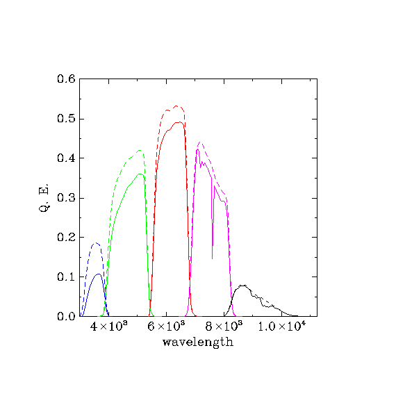
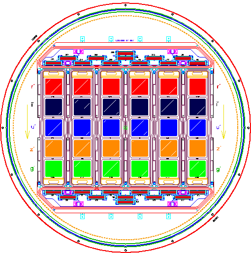
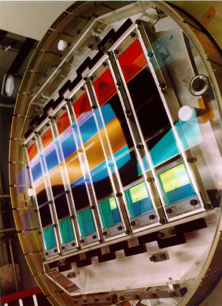

A detailed description of the imager can be found in Gunn et al. (1998) and in the project book. This page summarizes the most important information needed to understand the data it produces:
| Photometric CCDs | 30 2048 × 2048 SITe/Tektronix 49.2 mm square CCDs, arranged in 6 columns parallel to the scan direction and 5 rows perpendicular to the scan direction |
| CCD read noise | < 5e- pixel-1 (overall system is sky limited) |
| Image frame size | 2048 × 1361 pixels (13.51 × 8.98 arcminutes) |
| Image column separation | 25.17 arcminutes |
| Detector separation along column | 17.98 arcminutes |
| Focal-plane image scale | 3.616 mm arcmin-1 |
| Detector image scale | 3.636 mm arcmin-1 |
| Pixel size and scale | 24 μm; 0.396 arcseconds pixel-1 |
| Filters | r i u z g scanned in that order, 71.7 seconds apart |
| Integration time | 54 s |
| Operating mode | drift scan |
| Field distortion | <0.1 arcseconds over the entire field |
| Field size | 2°.5 |
| Flux calibration | Standard-star fields at 15° intervals along scans, tied to BD + 17° 4708, atmospheric extinction determined by the PT |
| Astrometric CCDs | 22, 0.25 × 2 inches, above and below CCD columns; r filter plus 3 mag neutral density filter, 10.5 second integration time |
The photometric flux calibration web page is essential reading for those wishing to understand the SDSS photometric system. There is a long page describing transformations between SDSS (ugriz) and Kron-Cousins (UBVRcIc) photometry.
| u | g | r | i | z |
| 3551Å | 4686Å | 6165Å | 7481Å | 8931Å |
The solid response curves show the througput defining the survey's photometric system, which includes extinction through an airmass of 1.3 at Apache Point Observatory. For reference, the dashed curves do not include any atmospheric extinction. These are sometimes loosely referred to as "filter curves" although they do include the full system response from atmosphere to detector.

Repeat photometry of most stars in stripe 82 is stable with time by 0.01 mag (Doi et al. 2010, arXiv:1002.3701). The response of each CCD and filter is also available.
Tables of camera sensitivity through each filter are available as html tables and as ASCII tables: u.dat g.dat r.dat i.dat z.dat
The columns of the table represent:
The response functions of the SDSS imager as a function of wavelength
have been monitored throughout the survey. The griz responses were
stable over time, although very small seasonal (i.e., temperature)
variations were observed, at a level well below our typical
photometric errors. However, we have found a relatively large change
in both the amplitude and shape of the u-band response, which is
likely due to a degradation of the UV enhanced coating of the u-band
CCD.
This change in instrumental zero-point is effectively corrected by the
photometric calibration for objects near the mean color of the standard
stars, and, in fact, the repeat photometry of stars in stripe 82 is stable
with time for stars with -0.5  